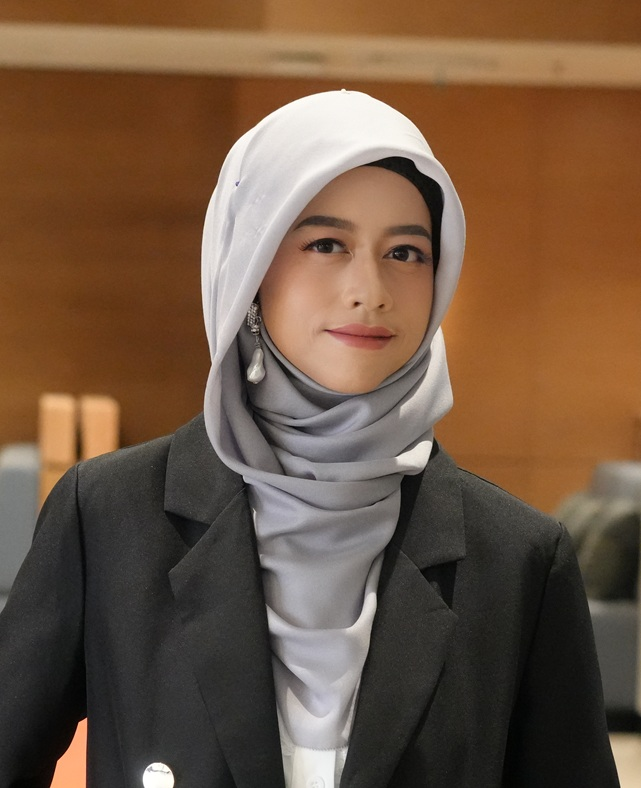

Joint Estimation of Relaxation and Diffusion Tissue Parameters for Prostate Cancer with Relaxation-VERDICT MRI
Marco Palombo, Vanya Valindria, Saurabh Singh, Eleni Chiou, et al.
ASSISTANT PROFESSOR · RESEARCHER
Assistant Professor at Monash University Indonesia, advancing medical imaging, machine learning and artificial intelligence for more equitable and accessible healthcare.

ABOUT ME
Monash University Indonesia | Jakarta, Indonesia | vanya.valindria@monash.edu
I am an Assistant Professor in the Data Science program at Monash University Indonesia. My research lies at the intersection of medical imaging, machine learning and artificial intelligence, with a particular interest in developing AI methods that are efficient, clinically meaningful and accessible across diverse healthcare settings.
My current research advances medical image analysis, multimodal machine learning, generative AI and healthcare AI. I am particularly interested in developing efficient and low-resource approaches for medical imaging, especially in settings where large-scale, well-curated datasets and computational resources may not be readily available. A central theme of my work is equitable medical AI: understanding how AI systems can be developed, evaluated and deployed in ways that better reflect diverse populations, healthcare environments and data contexts.
My research explores several areas within medical AI, including multimodal learning, medical image analysis, privacy-aware and data-efficient machine learning, interpretability and causal analysis in medical imaging, as well as vision-language models and generative AI for healthcare. I am particularly interested in questions around reasoning, reliability and safety when AI systems are applied to high-stakes medical decisions. Much of my current work focuses on locally collected and underrepresented healthcare data, including applications in stroke and tuberculosis.
Alongside my work in healthcare AI, I am also interested in the broader development and application of generative AI. This includes generative models for images, video and audio, as well as questions around how generative technologies interact with local contexts, creativity and Indonesian culture.
Before joining Monash University Indonesia, I worked as an AI researcher in industry for several years before returning to academia. I received my PhD in Computing Research from Imperial College London, where I was part of the BiomediA research group. My doctoral research focused on machine learning and medical image analysis, including multimodal learning, image segmentation and quality control.
Following my PhD, I worked as a Postdoctoral Research Fellow at the Centre for Medical Image Computing (CMIC) at University College London. I hold a Bachelor's degree in Biomedical Engineering from Institut Teknologi Bandung and a Master's degree in Computer Vision and Robotics from the Erasmus Mundus programme.
WORK WITH ME
I am interested in working with motivated PhD students, Master's students, research assistants and collaborators who are interested in medical imaging, machine learning and artificial intelligence for healthcare.
Potential research directions include medical image analysis, multimodal learning, efficient and low-resource AI, vision-language models, generative AI and equitable healthcare AI.
PhD applicants will generally need to secure their own funding or scholarship to enrol.
If you are interested in working with me, please email me with your CV and a brief note describing your research interests and which of my papers or projects resonate with you.
NEWS
Our papers were accepted to MICCAI Workshops 2026.
Continuing research on multimodal stroke analysis, low-resource tuberculosis detection and equitable AI for healthcare.
Joined Monash University Indonesia as an Assistant Professor.
SELECTED PUBLICATIONS
Marco Palombo, Vanya Valindria, Saurabh Singh, Eleni Chiou, et al.
Vanya V. Valindria, Ioannis Lavdas, Wenjia Bai, Konstantinos Kamnitsas, Eric O. Aboagye, Andrea G. Rockall, Daniel Rueckert, Ben Glocker
Vanya Valindria, N. Pawlowski, M. Rajchl, I. Lavdas, E. O. Aboagye, A. Rockall, D. Rueckert, B. Glocker
Robert Robinson, Vanya V. Valindria, Wenjia Bai, Hideaki Suzuki, Paul M. Matthews, Daniel Rueckert, Ben Glocker
Vanya Valindria et al.